Chapter 22 Time Series
(PART) Time Series {.unnumbered}
Forecasting {.unnumbered}
Time series forecasting is a task that involves using a model to predict future values of a time series based on its past values. The data consists of sequences of values that are recorded at regular intervals over a period of time, such as daily stock prices or monthly weather data. Time series forecasting can be approached using a variety of machine learning techniques, including linear regression, decision trees, and neural networks.
One key difference between time series forecasting and other types of machine learning tasks is the presence of temporal dependencies in the data. In time series data, the value at a particular time point is often influenced by the values that came before it, which means that the order in which the data points are presented is important. This can make time series forecasting more challenging, as the model must take into account the relationships between past and future values in order to make accurate predictions.
One of the most accessible and comprehensive source on forecasting using R is Forecasting: Principles and Practice (FPP3) by Rob J Hyndman and George Athanasopoulos. The book now has the \(3^{rd}\) edition that uses the tsibble and fable packages rather than the forecast package. This brings a better integration to the tidyverse collection of packages. A move from FPP2 to FPP3 brings a move from forecast to fable. The main difference is that fable is designed for tsibble objects and forecast is designed for ts objects 8.
In this section, we will use the tsibble and fable packages along with the fpp3 package and cover five main topics: applications with ARIMA models, grid search for ARIMA, time series embedding, forecasting with random forests, and artificial neural network applications, RNN and LSTM. The time-series analysis and forecasting is a very deep and complex subject, which is beyond the scope of this book to cover in detail. FPP3 is free and very accessible even for those without a strong background on time-series forecasting. Therefore, this section assumes that some major concepts, like stationarity, time series decomposition, and exponential smoothing, are already understood by further readings of FPP3.
22.1 ARIMA models
ARIMA (Autoregressive Integrated Moving Average) is a main statistical model for time series forecasting. It is a linear parametric model that can be used to analyze and forecast data that exhibit temporal dependencies, such as seasonality and autocorrelation. The model is comprised of three components:
- Autoregressive (AR) component, which models the dependencies between the current value and the past values in the data.
- Integrated (I) component, which refers to the degree of differencing that is applied to the time series data. The degree of differencing is the number of times that the data is differenced in order to make it stationary. The stationarity means that the mean, variance, and covariance are constant over time.
- Moving average (MA) component, which models the dependencies between the current and the past forecast errors. The MA component of an ARIMA model is used to capture the short-term fluctuations in data that are not captured by the AR component. For example, if the time series data exhibits random noise or sudden spikes, the MA component can help to smooth out these fluctuations and improve the forecast accuracy.
The ARIMA model can be written as ARIMA(p,d,q), where p is the order of the autoregressive component, d is the degree of differencing, and q is the order of the moving average component. The values of p, d, and q are chosen based on the characteristics of the time series data to achieve maximum forecasting accuracy. To use the ARIMA model, the time series data must first be preprocessed to remove any trend and seasonality, and to ensure that the data is stationary. The model is then fit to the preprocessed data, and forecasts are generated based on the fitted model.
The mathematical foundation of the ARIMA model is based on the concept of autoregressive (AR) and moving average (MA) processes. An autoregressive process is a type of stochastic process in which the current value of a time series depends on a linear combination of past values of the series. An autoregressive process can be represented mathematically as:
\[ X_{t} = c + \sum_{i=1}^{p}(\phi_{i} X_{t-i}) + \epsilon_{t}, \]
where \(X_{t}\) is the value of the time series at time \(t\), \(c\) is a constant, \(\phi_{i}\) is the autoregressive coefficient for lag \(i\), and \(\epsilon_{t}\) is white noise (a sequence of random variables with a mean of zero and a constant variance).
A moving average process is a type of stochastic process in which the current value of a time series depends on a linear combination of past errors or residuals (the difference between the actual value and the forecasted value). A moving average process can be represented mathematically as:
\[ X_{t} = c + \sum_{i=1}^{q}(\theta_{i} \epsilon_{t-i}) + \epsilon_{t}, \]
where \(\theta_{i}\) is the moving average coefficient for lag \(i\), and \(\epsilon_{t}\) is again white noise.
The ARIMA model, which is a combination of autoregressive and moving average processes, can be represented mathematically as:
\[ X_{t} = c + \sum_{i=1}^{p}(\phi_{i} X_{t-i}) + \sum_{i=1}^{q}(\theta_{i} \epsilon_{t-i}) + \epsilon_{t} \]
It is possible to write any stationary \(\operatorname{AR}(p)\) model as an MA(\(\infty\)) model by using repeated substitution. Here is the example for an \(\mathrm{AR}(1)\) model without a constant:
\[ X_{t} = \phi_{1} X_{t-1} + \epsilon_{t} ~~~ \text{and} ~~~ X_{t-1} = \phi_{1} X_{t-2} + \epsilon_{t-1}\\ X_{t}=\phi_1\left(\phi_1 X_{t-2}+\epsilon_{t-1}\right)+\epsilon_t\\ =\phi_1^2 X_{t-2}+\phi_1 \epsilon_{t-1}+\epsilon_t\\ =\phi_1^3 X_{t-3}+\phi_1^2 \epsilon_{t-2}+\phi_1 \epsilon_{t-1}+\epsilon_t\\ \vdots \]
With \(-1<\phi_1<1\), the value of \(\phi_1^k\) will get smaller as \(k\) gets bigger. Therefore, \(\mathrm{AR}(1)\) becomes an MA \((\infty)\) process:
\[ X_t=\epsilon_t+\phi_1 \epsilon_{t-1}+\phi_1^2 \epsilon_{t-2}+\phi_1^3 \epsilon_{t-3}+\cdots \] The parameters of the ARIMA model (\(c\), \(\phi_{i}\), \(\theta_{i}\)) are estimated using maximum likelihood estimation (MLE), which involves finding the values of the parameters that maximize the likelihood of the observed data given the model. Once the model has been fit to the data, it can be used to make point forecasts (predictions for a specific time point) or interval forecasts (predictions with a range of possible values).
Some common methods for selecting p and q include in the ARIMA(p,d,q):
- Autocorrelation function (ACF) plot, which shows the correlations between the time series data and lagged versions of itself. A high positive autocorrelation at a lag of p suggests that p may be a good value for p in ARIMA(p,d,q).
- Partial autocorrelation function (PACF) plot, which shows the correlations between the time series data and lagged versions of itself, after accounting for the correlations at all lower lags. A high positive autocorrelation at a lag of q suggests the value for q in ARIMA(p,d,q).
- There are several statistical measures that can be used to compare the goodness of fit of different ARIMA models, such as Akaike’s Information Criterion (AIC) and the Bayesian Information Criterion (BIC). These measures can be used to select the model with the lowest value, which is generally considered to be the best model.
It is important to note that determining the values of p and q is an iterative process, and we may need to try different values and evaluate the results in order to find the best fit for our data.
22.2 Hyndman-Khandakar algorithm
The Hyndman-Khandakar algorithm (Hyndman & Khandakar, 2008) combines several steps for modeling (and estimation) of the ARIMA model: unit root tests, minimization of the AICc, and MLE to obtain an ARIMA model. The arguments to ARIMA() in the fable package provide for many variations for modeling ARIMA. The modeling procedure to a set of (non-seasonal) time series data for ARIMA is defined in FPP3 as follows:
- Plot the data to identify any outliers.
- If the data shows variation that increases or decreases with the level of the series, transform the data (Box-Cox transformation) to stabilize the variance.
- Check if the data are non-stationary. And, make them stationary, if they are not.
- Start with an ARIMA \((p, d, 0)\) or ARIMA \((0, d, q)\) depending of what ACF/PACF indicates.
- Try your chosen model(s), and use the AICc to search for a better model.
However, after step 5, the residuals from the chosen model are supposed to be white noise. Otherwise, the model has to be modified. Once the residuals look like white noise, the ARIMA model is ready for forecasting.
We will show all these steps by using the epidemic curve of COVID-19 in Toronto covering 266 days between the March \(1^{st}\) and the November \(21^{st}\) of 2020. An epidemic curve (or epi curve) is a visual display of the onset of illness among cases associated with an outbreak. The data contain the first wave and the first part of the second wave. It is from Ontario Data Catalogue sorted by Episode Date, which is the date when the first symptoms were started. Our data set also contains the mobility data is from Facebook, all_day_bing_tiles_visited_relative_change, which reflects positive or negative changes in movement relative to baseline.
22.3 TS Plots
Let’s first load the data and convert it to tsibble.
library(tsibble)
library(fpp3)
load("dftoronto.RData")
day <- seq.Date(
from = as.Date("2020/03/01"),
to = as.Date("2020/11/21"),
by = 1
)
tdata <- tibble(Day = day,
mob = data$mob,
cases = data$cases)
toronto <- tdata %>%
as_tsibble(index = Day)
toronto## # A tsibble: 266 x 3 [1D]
## Day mob cases
## <date> <dbl> <dbl>
## 1 2020-03-01 -0.0172 4
## 2 2020-03-02 -0.0320 6
## 3 2020-03-03 -0.0119 10
## 4 2020-03-04 0.0186 7
## 5 2020-03-05 0.0223 7
## 6 2020-03-06 -0.00626 10
## 7 2020-03-07 0.0261 8
## 8 2020-03-08 0.0273 10
## 9 2020-03-09 -0.0158 18
## 10 2020-03-10 -0.0521 29
## # ℹ 256 more rowsNote the [1D] in the header indicating daily data. Dealing with daily and sub-daily data with ts class is not an easy process. The tsibble class handles such data with no problem. More details on tsibbles can be found at Tidy time series data using tsibbles.
Although there are better plotting option cosmetically, we will stick to what fpp3 simply offers:
a <- toronto %>% autoplot(mob, col = 'blue') +
labs(
title = "Mobility Index",
subtitle = "Toronto 2020",
x = "Days",
y = "Index"
)
b <- toronto %>% autoplot(cases, col = 'red') +
labs(
title = "Covid-19 Cases",
subtitle = "Toronto 2020",
x = "Days",
y = "Cases"
)
require(gridExtra)
grid.arrange(b, a, ncol = 2)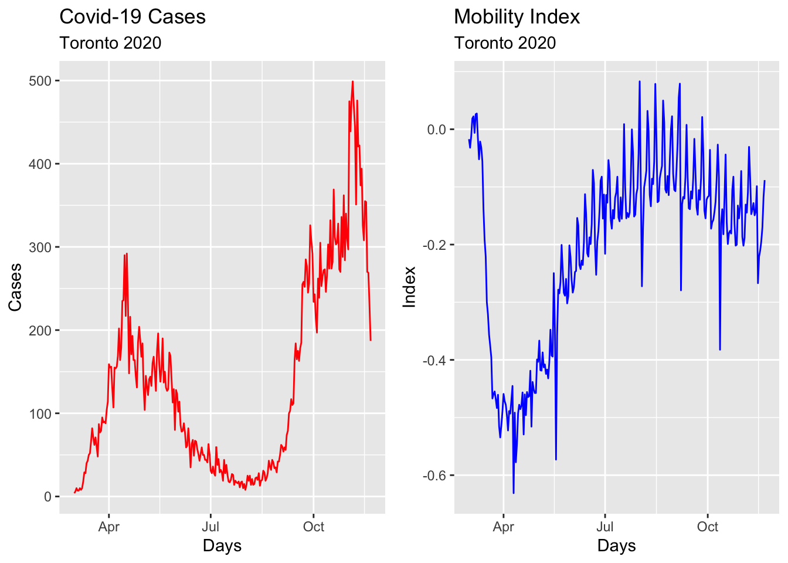
22.4 Box-Cox transformation
We would like to make the size of the variation about the same across the whole series. A proper variance-stabilizing transformation makes the forecasting model simpler and better. For example, Proietti and Lutkepohl (2012) find that the Box–Cox transformation produces forecasts which are significantly better than the untransformed data at the one-step-ahead horizon (See Does the Box–Cox transformation help in forecasting macroeconomic time series?).
lmbd <- toronto %>%
features(cases, features = guerrero) %>%
pull(lambda_guerrero)
toronto %>%
autoplot(box_cox(cases, lambda = lmbd), col = "red") +
labs(y = "",
title = latex2exp::TeX(paste0(
"Cases - Transformed with $\\lambda$ = ",
round(lmbd, 2)
)))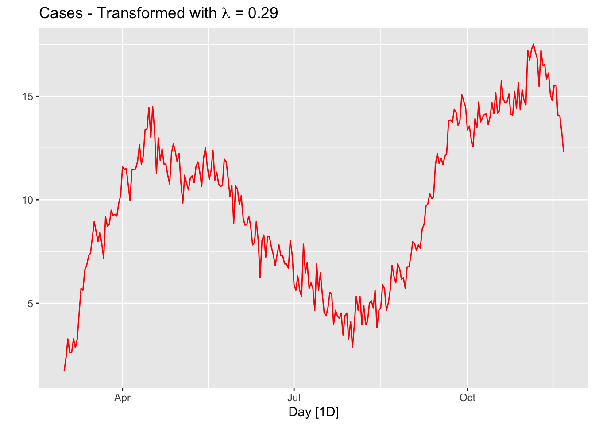
The option guerrero computes the optimal \(\lambda\) value for a Box-Cox transformation using the Guerrero method.
Note that, since the number of tests performed in a given day changes the numbers of cases, we should use “positivity rates”, which is the percentage of positive results in all COVID-19 tests given any day, instead of case numbers. We ignore this problem for now.
22.5 Stationarity
A time series is called stationary if a shift in time does not cause a change in the shape of the distribution: the mean, variance, and covariance. Stationarity is an important assumption in many time series forecasting methods, because non-stationary data have statistical properties that change over time making the current patterns and trends ungeneralizable for the future.
There are several tests that can be used to determine whether a time series is stationary or not, including the Dickey-Fuller and KPSS (Kwiatkowski-Phillips-Schmidt-Shin) tests. If a time series is found to be non-stationary, it may be necessary to transform the data in some way before applying a forecasting method in order to obtain reliable forecasts. The main method is differencing, which involves taking the difference between consecutive values in the series.
Let’s first formally test all these series and see what we get:
## # A tibble: 1 × 0## # A tibble: 1 × 0# Formal KPSS test on the first difference
toronto %>%
mutate(diffcases = difference(cases)) %>%
features(diffcases, unitroot_kpss)## # A tibble: 1 × 0It seems that the first difference can make the cases series stationary. The null in this test suggests that the series are stationary, and the p-value indicates that the null is rejected. So, it seems that the test after first differencing gives us a green light! However, ACF’s are telling us that seasonal differencing would be needed:
level <- toronto %>% ACF(cases) %>%
autoplot() + labs(subtitle = "Covid-19 Cases")
fdiff <- toronto %>% ACF(difference(cases)) %>%
autoplot() + labs(subtitle = "First-difference")
diffbc <- toronto %>% ACF(difference(box_cox(cases, lmbd))) %>%
autoplot() + labs(subtitle = "First-difference Box-Cox")
ddiff <-
toronto %>% ACF(difference(difference(box_cox(cases, lmbd)))) %>%
autoplot() + labs(subtitle = "Double-difference Box-Cox")
require(gridExtra)
grid.arrange(level, fdiff, diffbc, ddiff, ncol = 2, nrow = 2)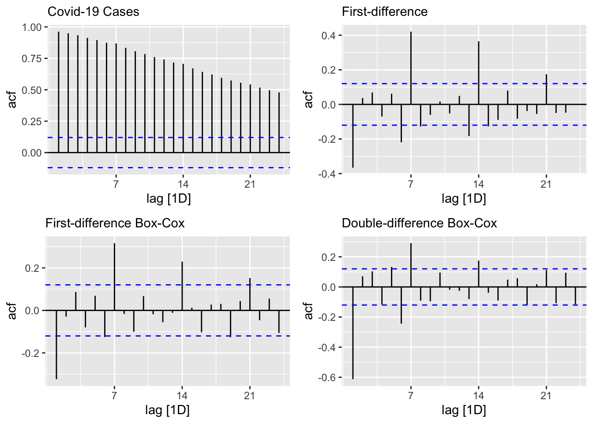
From ACF’s, there seems to be a weekly seasonal pattern at 7, 14, and 21, which are Sundays. We know that reported Covid-19 cases on Sundays tend to be lower than the rest of the week at least during the first wave.
We can also test if we need seasonal differencing:
## # A tibble: 1 × 1
## nsdiffs
## <int>
## 1 0## # A tibble: 1 × 1
## nsdiffs
## <int>
## 1 0The feature unitroot_nsdiffs returns 0 for both original and transformed series indicating no seasonal difference is required. We will stick to this “advice” because of two reasons. First, an unnecessary differencing would create more problems than a solution. Second, we can also modify ARIMA to incorporate seasonalllty in the data, which we will see shortly.
Yet, out of curiosity, let’s remove the “seemingly” weekly seasonality and see what happens to ACF’s. Since, the order of differencing is not important, we first applied the seasonal differencing then applied the first difference:
toronto %>%
gg_tsdisplay(difference(box_cox(cases, lmbd), 7) %>% difference(),
plot_type = 'partial',
lag = 36) +
labs(title = "Seasonal & first differenced", y = "")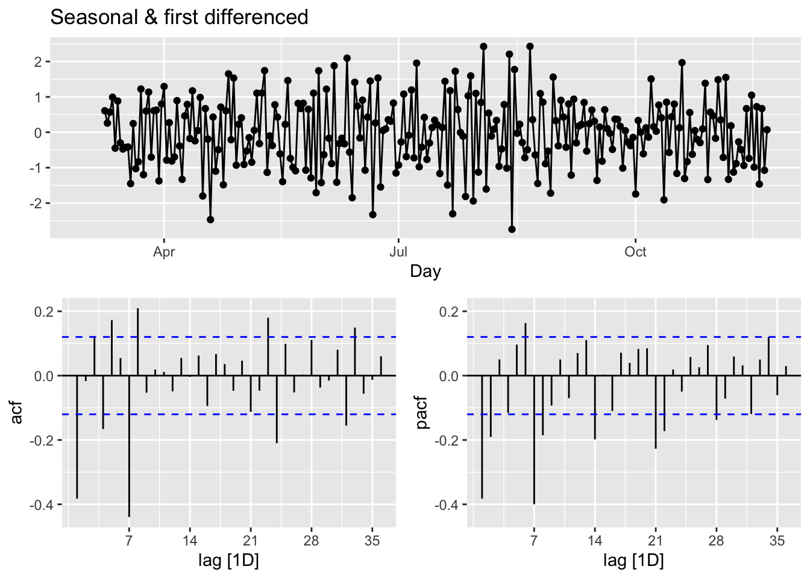
We can calculate the strength of the trend (T) and seasonality (S) in the time series, \(y_t=T_t+S_t+R_t\), by
\[ F_{Trend}=\max \left(0,1-\frac{\operatorname{Var}\left(R_t\right)}{\operatorname{Var}\left(T_t+R_t\right)}\right),\\ F_{Seasonality}=\max \left(0,1-\frac{\operatorname{Var}\left(R_t\right)}{\operatorname{Var}\left(S_t+R_t\right)}\right), \]
where \(R_t\) is the remainder component:
## [,1]
## trend_strength 0.9843102
## seasonal_strength_week 0.5142436Relative to \(F_{Trend}\), the seasonality is not robust in the data. So, our decision is to go with a simple first-differencing with Box-Cox transformation. However, we will look at the final predictive performance if the transformation provides any benefit.
22.6 Modeling ARIMA
In his post, Forecasting COVID-19, Rob J Hyndman makes the following comment in March 2020:
(…) the COVID-19 pandemic, it is easy to see why forecasting its effect is difficult. While we have a good understanding of how it works in terms of person-to-person infections, we have limited and misleading data. The current numbers of confirmed cases are known to be vastly underestimated due to the limited testing available. There are almost certainly many more cases of COVID-19 that have not been diagnosed than those that have. Also, the level of under-estimation varies enormously between countries. In a country like South Korea with a lot of testing, the numbers of confirmed cases are going to be closer to the numbers of actual cases than in the US where there has been much less testing. So we simply cannot easily model the spread of the pandemic using the data that is available.
The second problem is that the forecasts of COVID-19 can affect the thing we are trying to forecast because governments are reacting, some better than others. A simple model using the available data will be misleading unless it can incorporate the various steps being taken to slow transmission.
In summary, fitting simple models to the available data is pointless, misleading and dangerous.
With our selection of the data, we do not intent to create another debate on forecasting COVID-19. There are hundreds of different forecasting models currently operational in a hub, The COVID-19 Forecast Hub, that can be used live. We will start with an automated algorithm ARIMA() that will allow a seasonal parameters:
\[ \text { ARIMA }(p, d, q) \times(P, D, Q) S \]
The first term is the non-seasonal part of ARIMA with \(p=\) AR order, \(d=\) non-seasonal differencing, \(q=\) MA order. The secon term is seasonal part of the model with \(P=\) seasonal AR order, \(D=\) seasonal differencing, \(Q\) = seasonal MA order, and \(S=\) seasonal pattern, which defines the number of time periods until the pattern repeats again.
In our case, low values tend always to occur in some particular days, Sundays. Therefore, we may think that \(\mathrm{S}=7\) is the span of the periodic seasonal behavior in our data. We can think of a seasonal first order autoregressive model, AR(1), would use \(X_{t-7}\) to predict \(X_t\). Likewise, a seasonal second order autoregressive model would use \(X_{t-7}\) and \(X_{t-14}\) to predict \(X_t\). A seasonal first order MA(1) model would use \(\epsilon_{t-7}\) as a predictor. A seasonal second order MA(2) model would use \(\epsilon_{t-7}\) and \(\epsilon_{t-14}\).
Let’s use our data first-differenced and transformed:
toronto <- toronto %>%
mutate(boxcases = box_cox(cases, lambda = lmbd))
toronto %>%
gg_tsdisplay(difference(boxcases), plot_type='partial')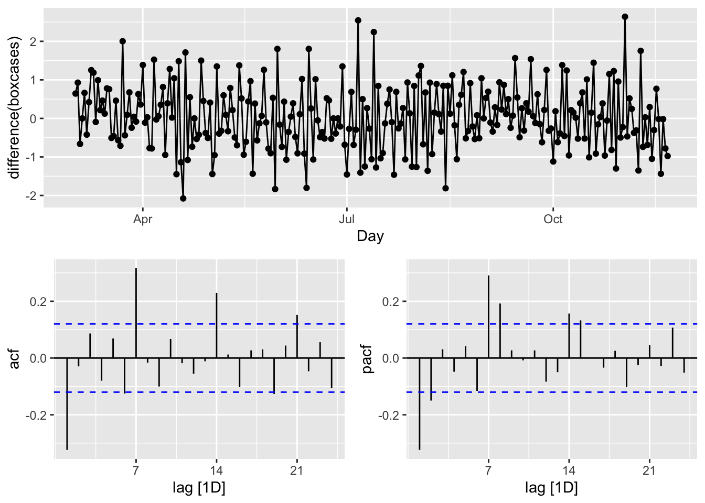
We look at the spikes and decays in ACF and PACF: a exponential decay in ACF is observed at seasonal spikes of 7, 14, and 21 as well as two spikes at 7 and 14 in PACF indicate seasonal AR(2). We will also add non-seasonal AR(2) due to 2 spikes in PACF at days 1 and 2. Here are our initial models:
\[ \operatorname{ARIMA}(2,1,0)(2,1,0)_{7}\\ \operatorname{ARIMA}(0,1,2)(0,1,3)_{7} \]
covfit <- toronto %>%
model(
AR2 = ARIMA(boxcases ~ pdq(2, 1, 0) + PDQ(3, 1, 0)),
MA3 = ARIMA(boxcases ~ pdq(0, 1, 2) + PDQ(0, 1, 3)),
auto = ARIMA(boxcases, stepwise = FALSE, approx = FALSE)
)
t(cbind(
"AR2" = covfit$AR2,
"MA3" = covfit$MA3,
"auto" = covfit$auto
))## [,1]
## AR2 ARIMA(2,1,0)(3,1,0)[7]
## MA3 ARIMA(0,1,2)(0,1,3)[7]
## auto NULL model## # A tibble: 2 × 6
## .model sigma2 log_lik AIC AICc BIC
## <chr> <dbl> <dbl> <dbl> <dbl> <dbl>
## 1 MA3 0.468 -277. 567. 567. 588.
## 2 AR2 0.534 -285. 582. 583. 604.## Series: boxcases
## Model: ARIMA(0,1,2)(0,1,3)[7]
##
## Coefficients:
## ma1 ma2 sma1 sma2 sma3
## -0.4340 0.1330 -0.8617 -0.0573 -0.0809
## s.e. 0.0648 0.0612 0.0827 0.0733 0.0600
##
## sigma^2 estimated as 0.4684: log likelihood=-277.29
## AIC=566.58 AICc=566.92 BIC=587.9The ARIMA() function uses unitroot_nsdiffs() to determine \(D\) when it is not specified. Earlier, we run this function that suggested no seasonal differencing.
All other parameters are determined by minimizing the AICc (Akaike’s Information Criterion with a correction for finite sample sizes), which is similar to Akaike’s Information Criterion (AIC), but it includes a correction factor to account for the fact that the sample size may be small relative to the number of parameters in the model. This correction helps to reduce the bias in the AIC estimate and make it more accurate for small sample sizes. When the sample size is large, AIC and AICc are nearly equivalent and either one can be used.
Although AICc values across the models are not comparable (for “auto”, as it has no seasonal differencing), it seems that our manually constructed ARIMA, \(\operatorname{ARIMA}(0,1,2)(0,1,3)_{7}\) could also be an option. This brings the possibility of a grid search to our attention.
Before that, however, let’s check their residuals:
rbind(
augment(covfit) %>%
filter(.model == "auto") %>%
features(.innov, ljung_box, lag = 24, dof = 5),
augment(covfit) %>%
filter(.model == "MA3") %>%
features(.innov, ljung_box, lag = 24, dof = 5),
augment(covfit) %>%
filter(.model == "AR2") %>%
features(.innov, ljung_box, lag = 24, dof = 5)
)## # A tibble: 3 × 3
## .model lb_stat lb_pvalue
## <chr> <dbl> <dbl>
## 1 auto NA NA
## 2 MA3 27.3 0.0971
## 3 AR2 21.1 0.331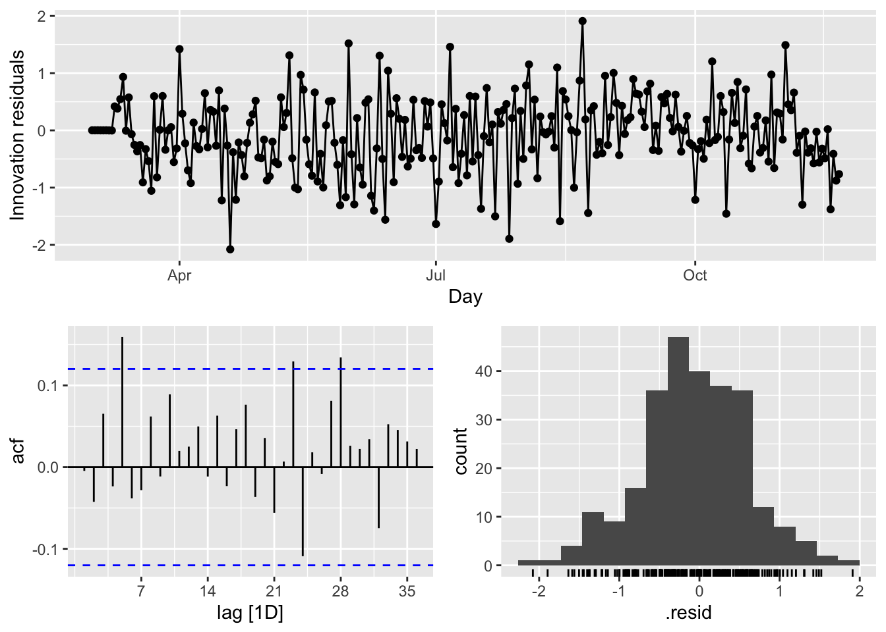
There are several significant spikes in the ACF. But, the model passes the Ljung-Box test at the 5 percent significance level.
Meanwhile, a model without white noise errors can still be used for forecasting, but the prediction intervals may not be accurate due to the correlated residuals. Sometimes, we cannot find a model that passes this test. In practice, we may have to look at the tradeoff between prediction accuracy and reliable confidence intervals. If the difference is too high, we may chose the best model with the highest prediction accuracy.
Before looking at a cross-validation approach for model selection in ARIMA modeling, let use our model to predict a week ahead (2020-11-22 to 2020-11-28):
## # A fable: 21 x 4 [1D]
## # Key: .model [3]
## .model Day boxcases .mean
## <chr> <date> <dist> <dbl>
## 1 AR2 2020-11-22 N(12, 0.53) 12.1
## 2 AR2 2020-11-23 N(13, 0.68) 13.3
## 3 AR2 2020-11-24 N(13, 0.87) 12.8
## 4 AR2 2020-11-25 N(13, 1.1) 12.8
## 5 AR2 2020-11-26 N(12, 1.3) 12.2
## 6 AR2 2020-11-27 N(12, 1.5) 12.3
## 7 AR2 2020-11-28 N(12, 1.7) 11.5
## 8 MA3 2020-11-22 N(12, 0.48) 12.4
## 9 MA3 2020-11-23 N(13, 0.63) 13.2
## 10 MA3 2020-11-24 N(13, 0.87) 13.1
## # ℹ 11 more rows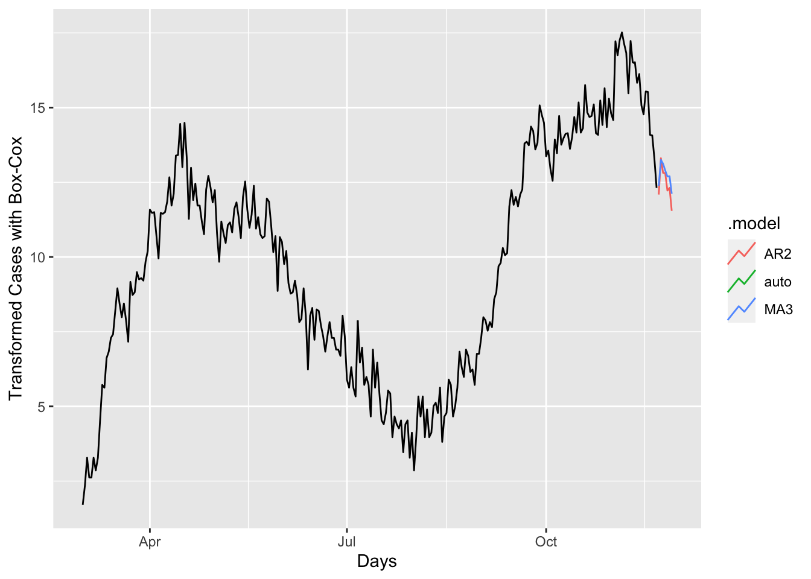
a <- forecast(covfit, h = 7) %>%
filter(.model == 'auto') %>%
autoplot(toronto) +
labs(title = "COVID-19 Forecasting - Auto",
y = "Box-Cox Tranformed Cases")
b <- forecast(covfit, h = 7) %>%
filter(.model == 'MA3') %>%
autoplot(toronto) +
labs(title = "COVID-19 Forecasting - MA3",
y = "Box-Cox Transformed Cases")
require(gridExtra)
grid.arrange(a, b, ncol = 2)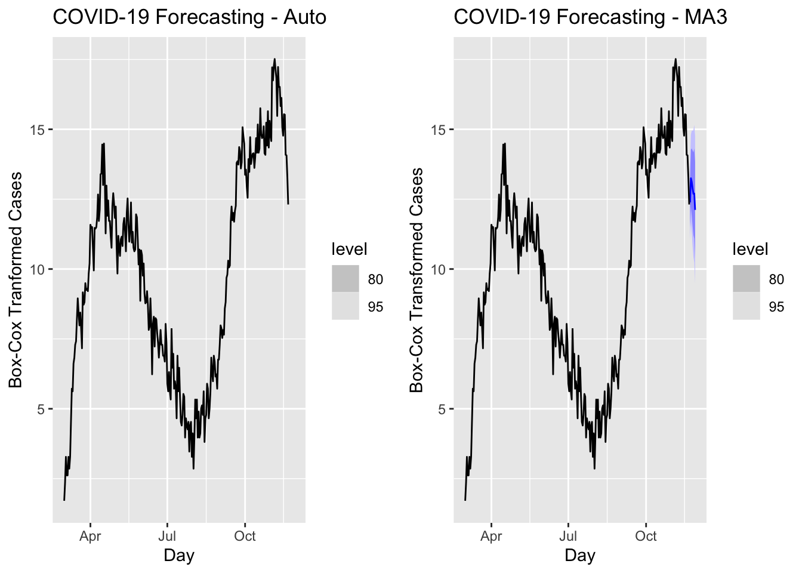
We have predicted values for coming 7 days but we do not have realized values. Hence, we cannot compare these models in terms of their accuracy. We can look at the forecast accuracy of these models by using a training set containing all data up to 2020-11-14. When we forecast the remaining seven days in the data, we can calculate the prediction accuracy.
train <- toronto %>%
filter_index( ~ "2020-11-14")
fit <- train %>%
model(
AR2 = ARIMA(boxcases ~ pdq(2, 1, 0) + PDQ(3, 1, 0)),
MA3 = ARIMA(boxcases ~ pdq(0, 1, 2) + PDQ(0, 1, 3)),
auto = ARIMA(boxcases, stepwise = FALSE, approx = FALSE)
) %>%
mutate(mixed = (auto + AR2 + MA3) / 3)Although mixing several different ARIMA models does not make sense, we can have an ensemble forecast mixing several different time series models in addition ARIMA modeling. A nice discussion can be found in this post at Stackoverflow.
And, now the accuracy measures:
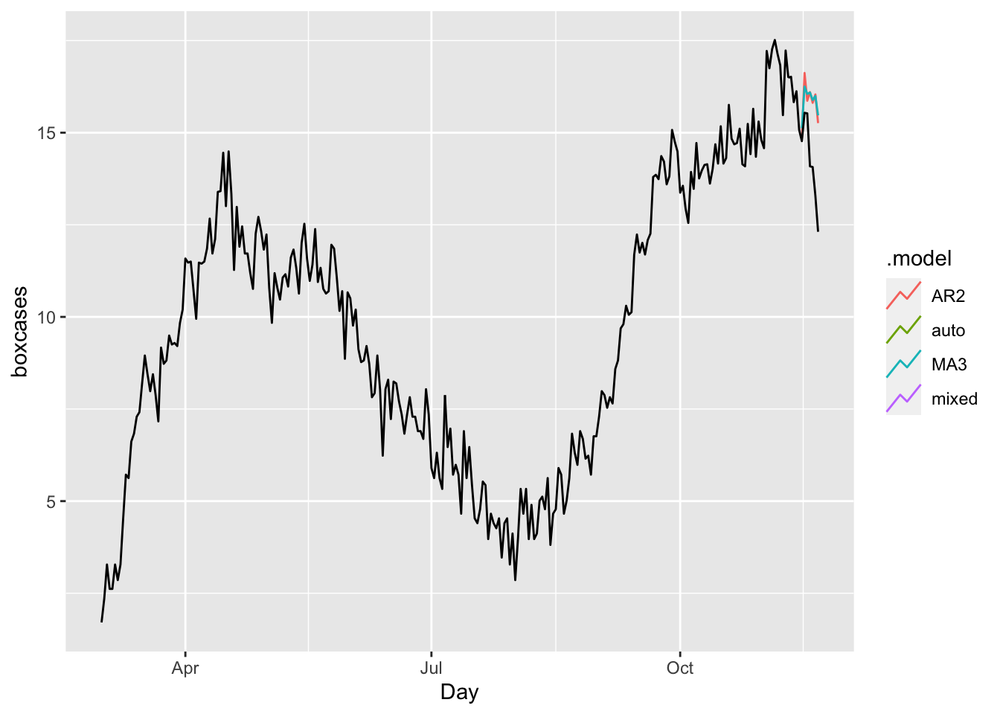
## # A tibble: 4 × 10
## .model .type ME RMSE MAE MPE MAPE MASE RMSSE ACF1
## <chr> <chr> <dbl> <dbl> <dbl> <dbl> <dbl> <dbl> <dbl> <dbl>
## 1 AR2 Test -1.57 1.88 1.57 -11.6 11.6 1.35 1.30 0.359
## 2 MA3 Test -1.61 1.91 1.61 -11.9 11.9 1.38 1.32 0.501
## 3 auto Test NaN NaN NaN NaN NaN NaN NaN NA
## 4 mixed Test NaN NaN NaN NaN NaN NaN NaN NAIn all measures, the model “auto” (ARIMA with the Hyndman-Khandakar algorithm) is better than others.
Finally, it is always good to check ARIMA (or any time series forecasting) against the base benchmark.
bfit <- train %>%
model(ave = MEAN(boxcases),
lm = TSLM(boxcases ~ trend() + season()))
bfc <- bfit %>% forecast(h = 7)
bfc %>%
autoplot(toronto, level = NULL)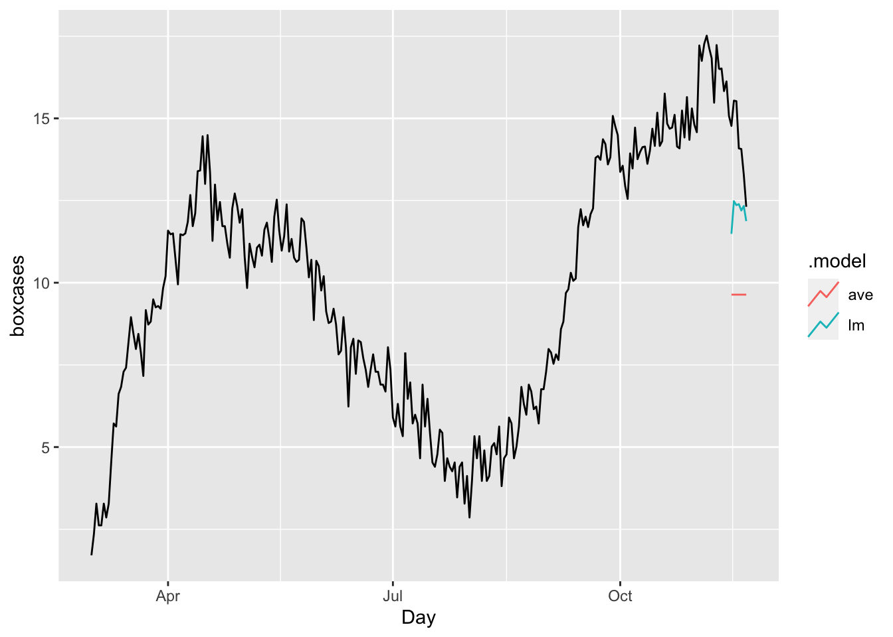
## # A tibble: 2 × 10
## .model .type ME RMSE MAE MPE MAPE MASE RMSSE ACF1
## <chr> <chr> <dbl> <dbl> <dbl> <dbl> <dbl> <dbl> <dbl> <dbl>
## 1 ave Test 4.59 4.72 4.59 31.8 31.8 3.94 3.26 0.507
## 2 lm Test 2.07 2.32 2.07 14.1 14.1 1.77 1.60 0.516The results shows our ARIMA model is doing much better job relative to a time-series linear model or a simple average.
As we discussed earlier in this book, there are basically two ways to select a best fitting predictive model: ex-post and ex-ante tools to penalize the overfitting. With AIC (Akaike Information Criterion) and BIC (Bayesian Information Criteria) measures, we can indirectly estimate the test (out-of-sample) error by making an adjustment to the training (in-sample) error to account for the bias due to overfitting. Therefore, these methods are ex-post tools to penalize the overfitting. The Hyndman-Khandakar algorithm uses this ex-post approach by selecting the best predictive ARIMA model with minimum AICc among alternatives.
We can directly estimate the test error (out-sample) and choose the model that minimizes it. Instead of selecting a model with AICc, we can do it by tuning the parameters of ARIMA with a cross-validation approach so that the tuned model achieves the highest predictive accuracy.
22.7 Grid search for ARIMA
Before we apply a cross validation approach to choose the model that has the minimum test error (out-sample), we would like to do a grid search for a seasonal ARIMA with \(d=1\), \(D=1\), and \(S=7\). We will report two outcomes: AICc and RMSE (root mean squared error).
#In-sample grid-search
p <- 0:3
q <- 0:3
P <- 0:3
Q <- 0:2
comb <- as.matrix(expand.grid(p, q, P, Q))
# We remove the unstable grids
comb <- as.data.frame(comb[-1,])
ind <- which(comb$Var1 == 0 & comb$Var2 == 0, arr.ind = TRUE)
comb <- comb[-ind,]
row.names(comb) <- NULL
colnames(comb) <- c("p", "q", "P", "Q")
aicc <- c()
RMSE <- c()
for (k in 1:nrow(comb)) {
tryCatch({
fit <- toronto %>%
model(ARIMA(boxcases ~ 0 + pdq(comb[k, 1], 1, comb[k, 2])
+ PDQ(comb[k, 3], 1, comb[k, 4])))
wtf <- fit %>% glance
res <- fit %>% residuals()
aicc[k] <- wtf$AICc
RMSE[k] <- sqrt(mean((res$.resid) ^ 2))
}, error = function(e) {
})
}
cbind(comb[which.min(aicc), ], "AICc" = min(aicc, na.rm = TRUE))## p q P Q AICc
## 75 3 3 0 1 558.7746## p q P Q RMSE
## 120 3 3 3 1 0.6478857Although we set the ARIMA without a constant, we could extend the grid with a constant. We can also add a line (ljung_box) that extracts and reports the Ljung-Box test for each model. We can then select the one that has a minimum AICc and passes the test.
We may not need this grid search as the Hyndman-Khandakar algorithm for automatic ARIMA modelling is able to do it for us very effectively (except for the Ljung-Box test for each model). We should note that the Hyndman-Khandakar algorithm selects the best ARIMA model for forecasting with the minimum AICc. In practice, we can apply a similar grid search with cross validation for selecting the best model that has the minimum out-of-sample prediction error without checking if it passes the Ljung-Box test or not. Here is a simple example:
#In-sample grid-search
p <- 0:3
q <- 0:3
P <- 0:3
Q <- 0:2
comb <- as.matrix(expand.grid(p, q, P, Q))
# We remove the unstable grids
comb <- as.data.frame(comb[-1,])
ind <- which(comb$Var1 == 0 & comb$Var2 == 0, arr.ind = TRUE)
comb <- comb[-ind, ]
row.names(comb) <- NULL
colnames(comb) <- c("p", "q", "P", "Q")
train <- toronto %>%
filter_index( ~ "2020-11-14")
RMSE <- c()
for (k in 1:nrow(comb)) {
tryCatch({
amk <- train %>%
model(ARIMA(boxcases ~ 0 + pdq(comb[k, 1], 1, comb[k, 2])
+ PDQ(comb[k, 3], 1, comb[k, 4]))) %>%
forecast(h = 7) %>%
accuracy(toronto)
RMSE[k] <- amk$RMSE
}, error = function(e) {
})
}
cbind(comb[which.min(RMSE), ], "RMSE" = min(RMSE, na.rm = TRUE))## p q P Q RMSE
## 12 0 3 0 0 0.7937723g <- which.min(RMSE)
toronto %>%
model(ARIMA(boxcases ~ 0 + pdq(comb[g, 1], 1, comb[g, 2])
+ PDQ(comb[g, 3], 1, comb[g, 4]))) %>%
forecast(h = 7) %>%
autoplot(toronto, level = NULL)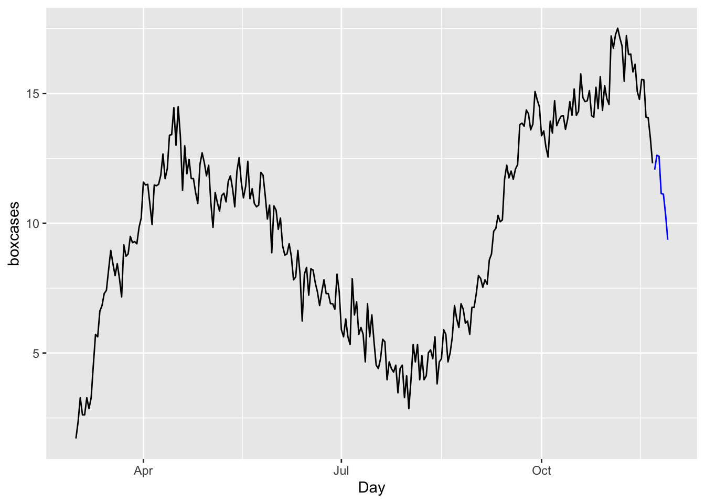
We will not apply h-step-ahead rolling-window cross-validations for ARIMA, which can be found in the post, Time series cross-validation using fable, by Hyndman (2021). However, when we have multiple competing models, we may not want to compare their predictive accuracy by looking at their error rates using only few out-of-sample observations. If we use rolling windows or continuously expanding windows, we can effectively create a large number of days tested within the data.
22.8 Hyperparameter tuning with time-series data:
While we have a dedicated section (Section VII) on forecasting with times series data, we will complete this chapter by looking at the fundamental differences between time-series and cross-sectional in terms of grid search.
We will use the EuStockMarkets data set pre-loaded in R. The data contains the daily closing prices of major European stock indices: Germany DAX (Ibis), Switzerland SMI, France CAC, and UK FTSE. The data are sampled in business time, i.e., weekends and holidays are omitted. We will focus on the FTSE. Below, the data and its plot:
#Data
data <- as.data.frame(EuStockMarkets)
day_index <- seq(1, nrow(data), by = 1)
data <- cbind(data, day_index)
head(data)## DAX SMI CAC FTSE day_index
## 1 1628.75 1678.1 1772.8 2443.6 1
## 2 1613.63 1688.5 1750.5 2460.2 2
## 3 1606.51 1678.6 1718.0 2448.2 3
## 4 1621.04 1684.1 1708.1 2470.4 4
## 5 1618.16 1686.6 1723.1 2484.7 5
## 6 1610.61 1671.6 1714.3 2466.8 6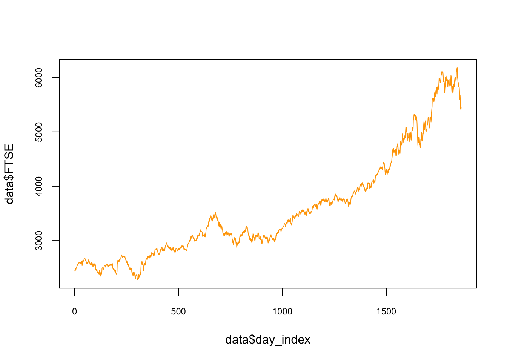
We can use smoothing methods to detect trends in the presence of noisy data especially in cases where the shape of the trend is unknown. A decomposition would show the components of the data: trend, seasonal fluctuations, and the noise, which is unpredictable and remainder of after the trend (and seasonality) is removed Here is an illustration for the FTSE with additive decomposition:
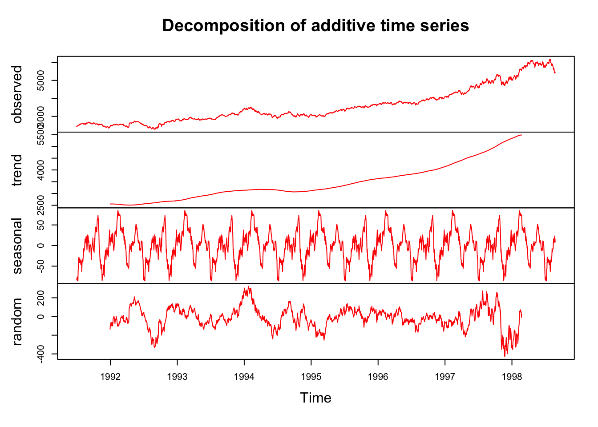
Separating the trend from the noise will enable us to predict the future values better. Having learnt how to model a learning algorithm, we can also train loess() to extract the trend in FTSE. Several smoothing lines are illustrated below to visualize the differences:
plot(
data$day_index,
data$FTSE,
type = "l",
col = "red",
cex.main = 0.80,
cex.axis = 0.75,
lwd = 2
)
lines(data$day_index,
predict(lm(FTSE ~ day_index, data)), lwd = 1, col = "green")
lines(data$day_index,
predict(loess(
data$FTSE ~ data$day_index, degree = 1, span = 0.01
)),
lwd = 2,
col = "grey")
lines(data$day_index,
predict(loess(
data$FTSE ~ data$day_index, degree = 1, span = 0.1
)),
lwd = 2,
col = "blue")
lines(data$day_index,
predict(loess(
data$FTSE ~ data$day_index, degree = 1, span = 0.9
)),
lwd = 2,
col = "yellow")
It seems that a linear trend is not appropriate as it underfits to predict. Although a smoothing method like loess() would be a good choice, but which loess() would be a good fit? One way of validating time series data is to keep the time order in the data when we use k-fold cross validation so that in each fold the training data takes place before the test data.
This type of cross validation is called as h-step-ahead rolling cross-validation. (There is also a method called as sliding-window-cross-validation). Below we can see an illustration of this kind of cross validation:

We are going to split the data without a random shuffle:
span <- seq(from = 0.05, to = 1, by = 0.05)
# *****h-step-rolling-CV********
h <- 10
opt <- c()
#CV loop
nvalid <- round(nrow(data) / h)
#This gives the 10 cutoff points in rows
cut <- c(1)
for (j in 1:h) {
cut <- c(cut, nvalid * j)
}
for (i in 1:h) {
if (i < h) {
train <- data[(cut[1]:cut[i + 1]),]
} else{
train <- data[cut[1]:cut[i],]
}
if (i + 2 < h)
valid <- data[(cut[i + 1]:cut[i + 2]),]
RMSPE <- c(rep(0), length(span)) #Matrix to store RMSPE
for (s in 1:length(span)) {
model <-
loess(
FTSE ~ day_index,
control = loess.control(surface = "direct"),
degree = 2,
span = span[s],
data = train
)
fit <- predict(model, valid$day_index)
RMSPE[s] <- sqrt(mean((valid$FTSE - fit) ^ 2))
}
opt[i] <- which(RMSPE == min(RMSPE), arr.ind = TRUE)
}
#Hyperparameters
opt_span <- mean(span[opt])
opt_span## [1] 0.43plot(
data$day_index,
data$FTSE,
type = "l",
col = "gray",
cex.main = 0.80,
cex.axis = 0.75
)
lines(data$day_index,
predict(loess(
data$FTSE ~ data$day_index,
degree = 2, span = opt_span
)),
lwd = 2,
col = "red")
Note that we did not start this algorithm with the initial split for testing. For the full train-validate-test routine the initial split has to be added into this cross-validation script.
Moreover, we started the validation after the first 10% split. We can also decide on this starting point. For example, we can change the code and decide to train the model after 30% training set. That flexibility is specially important if we apply Day Forward-Chaining Nested Cross-Validation, which is the same method but rolling windows are the days. The following figure helps demonstrate this method:

Although it is designed for a day-chained cross validation, we can replace days with weeks, months or 21-day windows. In fact, our algorithm that uses 10% splits can be considered a 10% Split Forward-Chaining Nested Cross-Validation. We will see multiple applications with special methods unique to time series data in Section VII.
22.9 Speed
Before concluding this section, notice that as the sample size rises, the learning algorithms take longer to complete, specially for cross sectional data. That’s why there are some other cross-validation methods that use only a subsample randomly selected from the original sample to speed up the validation and the test procedures. You can think how slow the conventional cross validation would be if the dataset has 1-2 million observations, for example.
There are some methods to accelerate the training process. One method is to increase the delta (the increments) in our grid and identify the range of hyperparameters where the RMSPE becomes the lowest. Then we reshape our grid with finer increments targeting that specific range.
Another method is called a random grid search. In this method, instead of the exhaustive enumeration of all combinations of hyperparameters, we select them randomly. This can be found in Random Search for Hyper-Parameter Optimization by James Bergstra and Yoshua Bengio (Berg_2012?).
To accelerate the grid search, we can also use parallel processing so that each loop will be assigned to a separate core in capable computers. We will see several application using these options later in the book. Both methods are covered in Chapter 14.
Finally, we did not use functions in our algorithms. We should create functions for each major process in algorithms and compile them in one clean “source” script.
There is a paper, <https://robjhyndman.com/publications/tsibble/), by Wang et al. (2020) describing
tsibbleand the package in more details↩︎